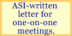

While many may not realize it, one-on-one meetings with industry leaders are not only permissible -- see Federal Acquisition Regulation 15.201(c)(4) -- they are more effective than pre-solicitation or pre-proposal conferences. Note that when market research is conducted before a solicitation or performance work statement is drafted, the rules are different. FAR 15.201(f) provides, for example: "General information about agency mission needs and future requirements may be disclosed at any time." Since the requirements have not (or should not have) been defined, disclosure of procurement-sensitive information is not an issue.
It is effective to focus on commercial and industry best practices, performance metrics and measurements, innovative delivery methods for the required services, and incentive programs that providers have found particularly effective.
|
This type of market research can expand the range of potential solutions, change the very nature of the acquisition, establish the performance-based approach, and represent the agency's first step on the way to an "incentivized" partnership with a contractor.

|